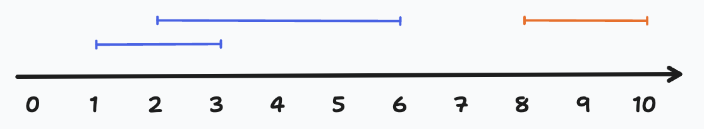

56. 合并区间
以数组 intervals 表示若干个区间的集合，其中单个区间为 intervals[i] = [starti, endi] 。请你合并所有重叠的区间，并返回 一个不重叠的区间数组，该数组需恰好覆盖输入中的所有区间 。
示例 1：
输入：intervals = [[1,3],[2,6],[8,10],[15,18]]
输出：[[1,6],[8,10],[15,18]]
解释：区间 [1,3] 和 [2,6] 重叠, 将它们合并为 [1,6].
示例 2：
输入：intervals = [[1,4],[4,5]]
输出：[[1,5]]
解释：区间 [1,4] 和 [4,5] 可被视为重叠区间。
提示：
- 1 <= intervals.length <= 104
- intervals[i].length == 2
- 0 <= starti <= endi <= 104
首先我们来看，题目要求一组区间合并后的结果，如何合并取决于两个区间的关系。那两个集合的关系共有几种呢？共四种关系：包含、被包含、有交集、无交集。具体到编码上，如何判断是哪种关系是通过判断区间的上下边界。比如你想判断[1, 3]和[2, 6]的关系，首先是否是包含关系，你得判断2和6是不是都大于等于1小于等于3，发现不是，再判断是否被包含关系，即1和3是否都大于等于2小于等于6，也不是，接着再判断是否有交集，发现是交集的。有交集的就要合并，合并后变为[1, 6]，重复这一过程处理[1, 6]与[8, 10]，直到最后一个区间。

同时可以发现，区间的合并是有顺序性的，比如，如果先合并[1, 3]和[8, 10]，再合并[2, 6]，前两个没有交集，如果你只拿后一个[8, 10]与[2, 6]合并，最后的合并结果还是原来的三个区间，没什么变化。
如果有N个区间，照这种算法，复杂度应该是O(N^2)，所以我们需要对区间进行排序，排序还有一个好处，区间由“左右”两个值确定，如果按照其中一个值已经是排好序的，那判断区间关系的时候，只需要判断剩下的那个边界就可以了。你可能要问了，你怎么想到排序的，你怎么发现这种特点的？我只能说，看答案，哈哈，开句玩笑。其实这就是一种洞察力，如果你不是生而知之者，只能靠练了。
下面开始编码，我们选取下边界进行排序，然后通过判断上边界来确定区间的关系。
class Solution {
public int[][] merge(int[][] intervals) {
// 按起始位置从低到高排序
Arrays.sort(intervals, (i1, i2) -> i1[0] - i2[0]);
List<int[]> res = new ArrayList<>();
int[] pre = intervals[0];
for (int i = 1; i < intervals.length; i++) {
int[] cur = intervals[i];
// [[1,3],[2,6],[8,10],[15,18]]
// 那么分别处理三种情况：无交集、有交集、包含
if (pre[1] < cur[0]) { // 无交集
res.add(pre);
pre = cur;
} else if (pre[1] >= cur[0] && pre[1] <= cur[1]) { // 有交集
pre[1] = cur[1];
} else { // 包含
// do nothing
}
}
res.add(pre);
return res.toArray(new int[0][0]);
}
}
可以看到在处理区间关系时，处理了无交集、有交集以及包含关系，如果你还记的上面说过两个区间的关系共有四种，你就会发现少了一个被包含，原因是显而易见的，因为经过了排序，不可能存在这种关系。这样经过一遍循环就可以得到合并后的结果了。
总结一下，这道题有两个关键点：一是要想到两个区间的四种关系，二是使用排序简化整体逻辑。当遭遇O(N^2)复杂度时，排序通常可以作为算法武器库中一个通用兵器尝试一下，虽然它会提高局部的算法复杂度，但如果它能降低整体的算法复杂度，那么排序就是值得的。
对了，还有一个小问题，题目中的区间都是闭区间，如果是开区间怎么办？ 一个简单的办法是如果是“左开”，那么可以在原来的值上面加一，如果是“右开”，那就在原来的值上减一。当然这些区间的值必须是整数，如果是小数，又该怎么办呢？